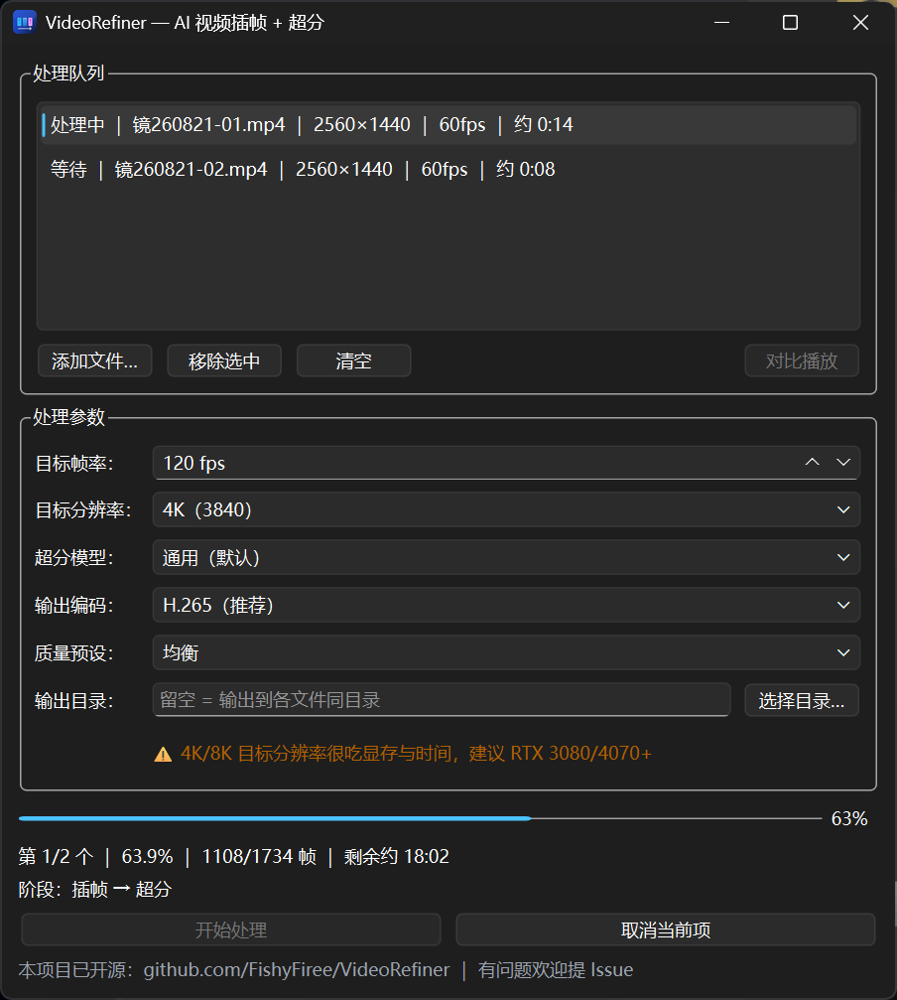
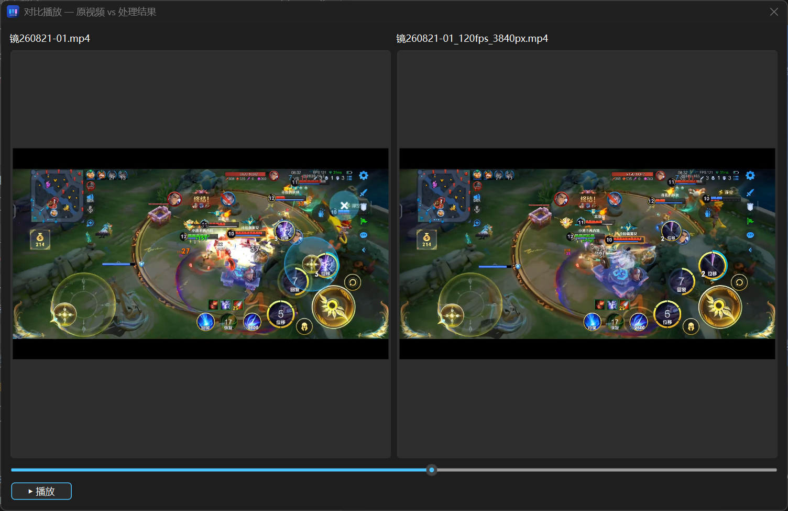

README.md
Markdown
// Select a file from the tree →An AI video enhancer built with Python & PySide6 — frame interpolation (RIFE v4.26) to smooth motion and super-resolution (Real-ESRGAN) to sharpen detail. Input any source framerate/resolution and output a higher one (60→120fps, 1080p→4K, …), even non-integer multiples. Composable pipeline: interpolate first at native resolution, then upscale with aspect-ratio preservation, multi-model selection, and auto tiling for VRAM. Chinese desktop GUI with batch queue, side-by-side comparison playback, a CLI, and audio passthrough. NVIDIA GPU (CUDA) required.
// Select a file from the tree →Download the Windows installer or browse the project's GitHub Releases.
Windows installer — v2 adds AI super-resolution (Real-ESRGAN) on top of RIFE frame interpolation. Composable pipeline: interpolate first at native resolution, then upscale with aspect-ratio preservation. Multiple upscale models (x2/x4, anime, 1080p→4K 2×), auto tiling with VRAM fallback, non-integer scaling via bicubic round-trip + model refinement, 4K/8K performance warnings. NVIDIA GPU (CUDA) required.
See Video Refiner in action.

Video Refiner 主界面
Video Refiner 应用图片